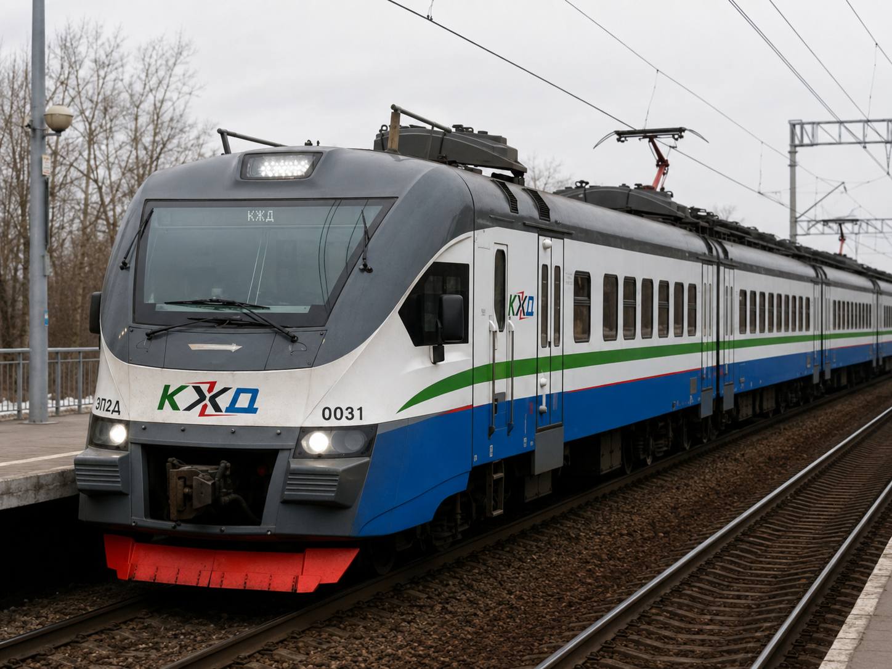
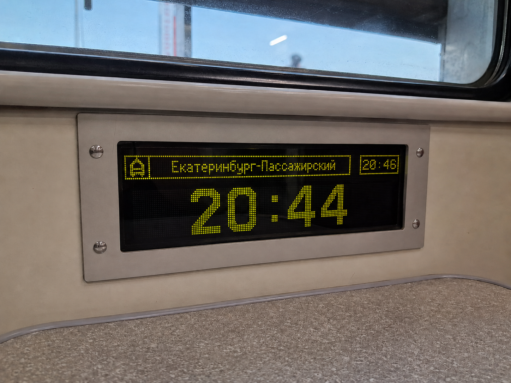
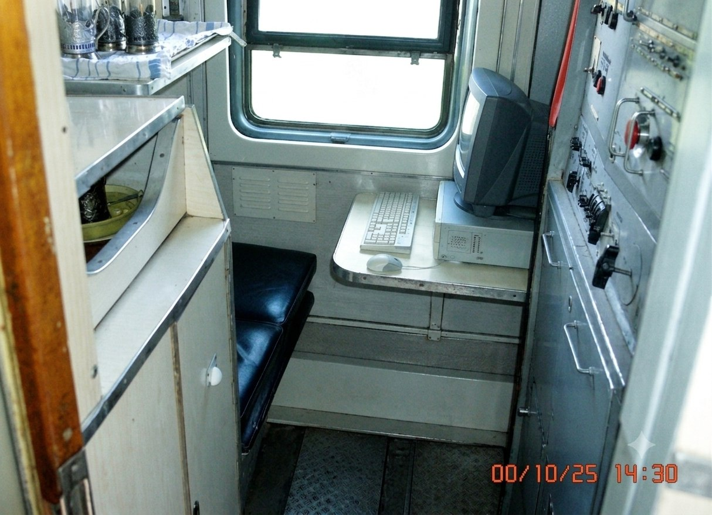
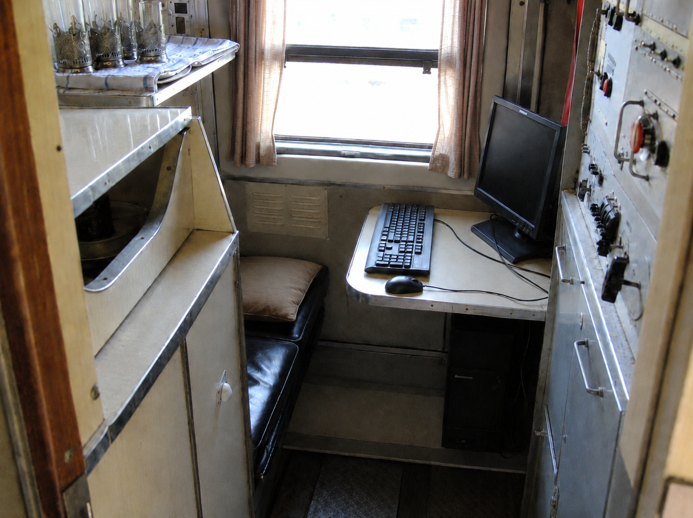
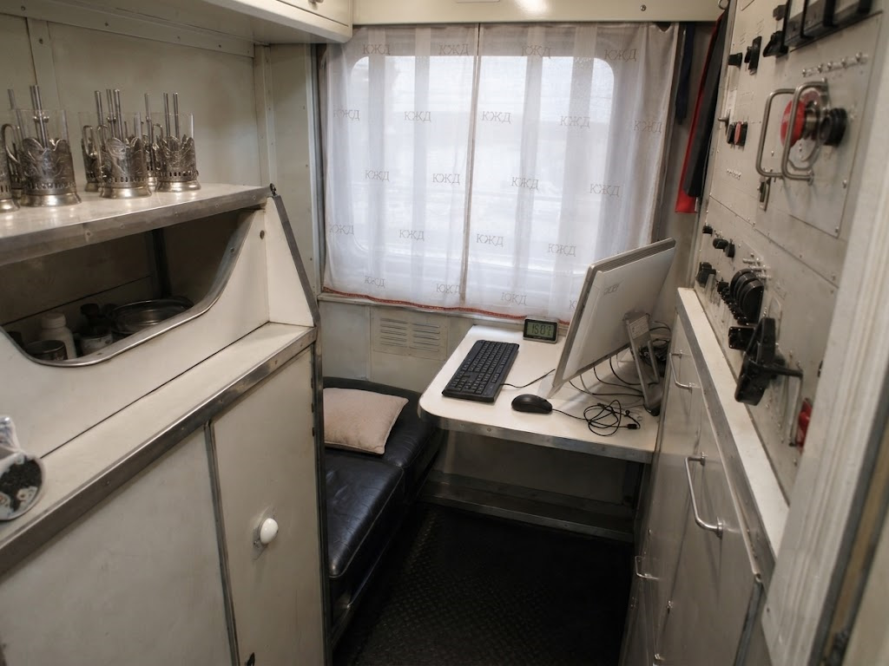

Кивишские Железные Дороги
Кивишские Железные Дороги (кивиш. Ківішски Желјде Дарогі, сокр. КЖД) — железнодорожная организация Кивиша, созданная 18 октября 1989 года на базе прежней системы ЖД-СКР.
КЖД обслуживает железнодорожные перевозки на основной территории Кивиша, на Сатали, в Кивише Корейского Полуострова и в Африканском Кивише. Система объединяет дальние пассажирские маршруты, пригородное движение, грузовые перевозки, промышленные ветви и отдельные территориальные железнодорожные контуры.
В истории КЖД выделяются переход от ЖД-СКР к новой железнодорожной структуре после 1989 года, сохранение части международных маршрутов в 1990-х, модернизация пассажирских вагонов и электропоездов, восстановление железнодорожной сети ККП после 2011 года, обновление парка в 2010-х и появление африканского железнодорожно-портового направления в 2021 году.

Название
Название Кивишские Железные Дороги закрепилось за организацией после реформы 1989 года, когда на базе прежней системы ЖД-СКР была создана новая железнодорожная структура Кивиша. Сокращение КЖД быстро вошло в служебное и повседневное употребление.
Переход к новому названию сопровождался сменой маркировки, окраски подвижного состава и общей визуальной символики. Старые обозначения ЖД-СКР постепенно исчезли из расписаний, документации и оформления поездов.
История
1989: Создание КЖД
18 октября 1989 года прежняя ЖД-СКР была упразднена как структура коммунистического периода, а вместо неё была оформлена КЖД. В первые дни после оформления движение сохранялось на старой технической базе, поэтому главными внешними изменениями стали новое название, символика и оформление поездов.
Вагоны, электропоезда и локомотивы начали получать новую маркировку. Старые обозначения СКР заменялись на КЖД, а сине-зелёная и голубая окраска постепенно стала узнаваемой частью облика железной дороги.
Начало 1990-х: Международные маршруты
В начале 1990-х годов КЖД сохранила часть дальних связей с соседними железнодорожными системами. Одним из заметных направлений были вагоны в сторону Москвы: кивишские вагоны доходили до российской сети, где их принимал местный локомотив. Такая схема позволяла пассажирам ехать без ночной пересадки, повторного размещения багажа и смены вагона.
В тот же период существовали контролируемые транзитные коридоры, доставшиеся от позднего периода СКР. Они сохраняли движение, но не означали свободного открытия территории для всех участников маршрута.
1990-е: Формирование отдельной сети Сатали
В 1990-е годы отдельным направлением развития стала железная дорога Сатали. Островная сеть постепенно получила собственную техническую логику и стала отличаться от материковой части КЖД. Главным отличием стала стандартная колея 1435 мм, связанная с островным положением Сатали и морской логистикой.
После перестройки островной сети внутри КЖД закрепилась постоянная двухконтурность: материковая сеть широкой колеи и отдельная стандартная сеть Сатали. Это повлияло на закупки поездов, локомотивов, запасных частей и подготовку ремонтной базы.
1994: Катастрофа рейса KA-624
25 мая 1994 года катастрофа рейса Kivish Air 624 стала одной из крупнейших транспортных трагедий в истории Кивиша. Самолёт Boeing 737-200 упал на участке магистрали KS-54 и задел расположенную рядом железнодорожную линию. Электропоезд DG-6648 серии ЭР2П получил тяжёлые повреждения: три вагона были разрушены, остальные сошли с рельсов.
Хотя первопричина катастрофы относилась к авиации, для железной дороги она стала важным событием из-за разрушения линии, гибели пассажиров поезда и повреждения движения на одном участке. После восстановления дороги место трагедии стало частью транспортной памяти Кивиша.
1998: Первая модернизация пассажирских вагонов
В 1998 году пассажирские вагоны КЖД начали получать розетки 220 В, отдельные батарейные блоки и компьютеризированные рабочие места проводников. В вагонах использовались компьютеры HP Pentium II, дискетные носители для служебных данных и системы DVD-проигрывания фильмов.
2004–2005: Глубокое обновление вагонов
В 2004–2005 годах прошла более глубокая модернизация пассажирских вагонов. Обновлялись салоны купе и плацкарта, устанавливались цифровые часы, улучшенные туалетные индикаторы, новые шторки, шумоизоляция, более стабильное питание и рабочие места проводников с компьютерами Lenovo.
2008: Модернизация электропоездов ЭР2 и ЭР9
В 2008 году началась модернизация электропоездов ЭР2 и ЭР9. Составы получали ремонт кузовов, розетки, мягкие тканевые сиденья, кондиционирование, улучшенную шумоизоляцию и новую окраску. Часть старых электропоездов была разобрана на запчасти, но отдельные составы сохранились для специальных и сезонных проектов.
2011–2013: Восстановление железных дорог ККП
После кампании 2011 года территория бывшей КНДР была оформлена как Кивиш Корейского Полуострова. На первом этапе железнодорожная логистика была связана прежде всего с гуманитарными задачами: доставкой продовольствия, медикаментов, радиобатарей, строительных материалов и оборудования.
В 2012 году поставки стали шире и начали включать материалы для ремонта городов, технику и товары для запуска нормальной экономической жизни. После первых выборов 2013 года и стабилизации управления железнодорожная сеть ККП начала переходить от восстановительного режима к регулярным пассажирским и грузовым перевозкам.
2015: Новая модернизация пассажирских вагонов

В 2015 году пассажирские вагоны получили новую внутреннюю модернизацию. Старые цифровые часы были заменены на LED-системы, показывавшие время, текущую или следующую станцию и примерное время прибытия. Компьютеры Lenovo были сняты и заменены моноблоками Acer.
К середине 2010-х годов старый пригородный парк всё сильнее воспринимался как ограничение. После этого КЖД перешла к закупкам новых электропоездов для материковых линий и отдельного подвижного состава для Сатали.
2017: Закупка новых электропоездов
В конце 2017 года для материковой части КЖД были закуплены электропоезда ЭП2Д и ЭП3Д. Для Сатали были закуплены Hitachi AT300, доставленные морским путём и рассчитанные на островную колейную систему.
2018: Сезонные поезда и эксперимент с «Окой»
В 2018 году два старых округлых ЭР2 использовались как зимние сезонные поезда на маршруте между Корой и Пхеньяном. Они работали как праздничные экспрессы в течение зимнего периода.
В том же году Министерство метрополитена Коры передало один поезд 81-760/761 «Ока» для эксперимента по адаптации метро-состава под наземную эксплуатацию. Проект не относился непосредственно к КЖД и находился в ведении городского транспортного ведомства.
Для полноценной работы на наземной железнодорожной линии такому составу требовалась бы глубокая переработка питания, токосъёма, климатической защиты, систем эвакуации, платформенной совместимости и сигнализации.
2019: Обновление локомотивного парка
В 2019 году тяговый парк был усилен локомотивами ЭП1М, ЭП2К, 3ЭС4К и 2ТЭ25КМ. Для Сатали отдельно закупались локомотивы Toshiba HXD3.
2021: Обновление ККП и создание африканского контура
В 2021 году старые ЭР2 и ЭР9 были вытеснены из регулярного пригородного движения ККП новыми ЭП2Д и ЭП3Д. После этого старый парк сохранялся главным образом в удалённых районах основной территории Кивиша.
В том же году КЖД начала работу в Африканском Кивише. Африканский контур отличается от основной сети тем, что не имеет сухопутного соединения с материковым Кивишем. Его связь с общей системой обеспечивается через порты Красного моря, контейнерные паромы и местную железнодорожную инфраструктуру.
Внутри Африканского Кивиша железная дорога обслуживает порты, восстановительные работы, грузовые перевозки, городские связи и пассажирские маршруты.
2022–2024: Перевозки через Россию
После начала войны России и Украины в 2022 году КЖД не прекратила пассажирские перевозки через российскую территорию. Железнодорожное сообщение продолжало работать до тех пор, пока против КЖД не предпринимались прямые действия и сохранялись технические условия маршрутов.
В 2024 году через территорию Российской Федерации были запущены прямые пассажирские перевозки в Казахстан и Республику Беларусь.
2026: Курс на локализацию производства
В 2026 году на фоне падения доверия к российской автомобильной технике и слабого положения южнокорейских брендов в ККП усилилось внимание к локальной промышленности. В автомобильной сфере это выразилось в создании компании Hanul.
В железнодорожной сфере обсуждалось сотрудничество с модернизированным железнодорожным транспортным заводом Пхеньяна. Такое направление связывали с возможностью будущего выпуска собственных или локализованных поездов для ККП и снижением зависимости от внешних закупок.
Подвижной состав
Электропоезда
- ЭР2 — старый парк, использовавшийся в основной сети и позднее в удалённых регионах.
- ЭР9 — электропоезда старого поколения, модернизировавшиеся в 2008 году.
- ЭП2Д — новые электропоезда для материковой сети и ККП.
- ЭП3Д — новые составы для обновления пригородного движения.
- Hitachi AT300 — поезда для островной сети Сатали.
Локомотивы
- ЭП1М — пассажирский электровоз для дальних направлений.
- ЭП2К — пассажирский электровоз обновлённого тягового парка.
- 3ЭС4К — грузовой электровоз для тяжёлых перевозок.
- 2ТЭ25КМ — тепловоз для неэлектрифицированных и служебных направлений.
- Toshiba HXD3 — локомотивы, закупленные для Сатали.
Модернизация комнат проводников



Территориальные контуры
Основной Кивиш
Основной Кивиш является главным материковым контуром КЖД. Здесь сосредоточены дальние пассажирские маршруты, пригородное движение, грузовые перевозки и промышленные ветви.
Сатали
Сатали имеет отдельную островную железнодорожную систему. Она использует стандартную колею 1435 мм и отдельные закупки поездов и локомотивов.
ККП
В ККП железная дорога стала одним из главных инструментов восстановления после падения прежнего режима. Сначала она обеспечивала доставку еды, медикаментов и строительных материалов, затем перешла к регулярным пассажирским и грузовым перевозкам.
Африканский Кивиш
В Африканском Кивише КЖД работает как часть портовой и восстановительной инфраструктуры. Основные функции — обслуживание портов, перевозка строительных материалов, снабжение городов и поддержка внутренней логистики.
Главные узлы
Главным узлом КЖД считается железнодорожная станция города Кора. Она обслуживает дальние, пригородные и промышленные направления и связана с городской транспортной системой Коры через наземные пересадки.
В ККП важнейшим узлом стал Пхеньян, где железнодорожная сеть была восстановлена после 2011 года и постепенно включена в регулярное движение. В Африканском Кивише ключевую роль играют портовые узлы Красного моря.
Инциденты и память
Самым известным событием, затронувшим КЖД, стала катастрофа рейса KA-624 в 1994 году. Хотя она произошла из-за авиационной аварии, разрушение железнодорожной линии и гибель людей на земле сделали её общей транспортной трагедией.
В истории железнодорожной станции города Кора также упоминаются более ранние аварии 1901 и 1950 годов. Они относятся к памяти главного вокзала и старой железнодорожной инфраструктуры Кивиша.
Связь с другими транспортными системами
В Коре КЖД взаимодействует с автобусной сетью, городскими станциями пересадки и метрополитеном, хотя прямого входа в метро у главного вокзала нет. В ККП железная дорога дополняется автобусами, школьными маршрутами, метрополитеном Пхеньяна и новыми городскими сервисами.
В Африканском Кивише железнодорожная система тесно связана с морскими портами. Поэтому роль КЖД там ближе к портово-грузовой и восстановительной инфраструктуре, чем к классической материковой пригородной сети.
Критика и проблемы
КЖД часто описывается как сложная система из-за большого количества технических контуров. Материковая сеть, Сатали, ККП и Африканский Кивиш требуют разных решений по колее, электрификации, запчастям, обучению персонала и закупкам техники.
Отдельной темой остаётся неравномерность обновления парка. После появления новых ЭП2Д и ЭП3Д в ККП старые ЭР2 и ЭР9 ещё сохранялись в удалённых регионах основной территории Кивиша, что вызывало споры о порядке модернизации.
См. также
Примечания
- КЖД описывается как железнодорожная организация, а не как самостоятельный политический орган.
- Территориальные различия сети связаны с историей СКР, Сатали, ККП и Африканского Кивиша.
- Даты и события приведены по внутренней хронологии Neverpedia.